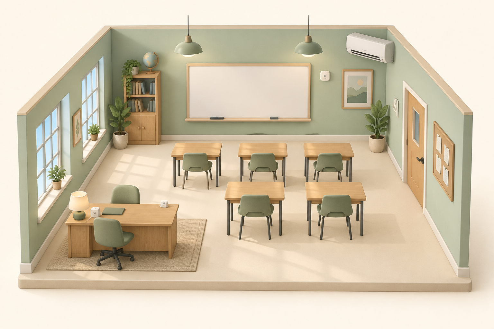

LOCAL EDGE DECISION
Sense here. Respond here.
SensorEdge ruleStop
Ready
The edge node takes 8 ms to detect, decide and issue the stop command in this example.
TOPIC 01 / THE IOT ECOSYSTEM
Make a classroom smart. Follow its signals. Discover how data becomes action.
One classroom.
A whole connected ecosystem.
SLIDES 5–9
Click a device to discover its role.
Change the room and watch it respond.

Add three students, then raise the temperature to 30 °C. Which device senses the change, and which device acts?
SLIDES 5, 11 & 13
Devices measure. Gateways translate.
Platforms store and analyse.
Produces a reading with a device ID, value and timestamp.
Converts a supported device message into an internet message. Buffers readings during an outage.
Identifies the device, records its data and supports rules or dashboards. Commands can travel back.
Illustrative network: protocol support depends on hardware. Some Wi-Fi devices use a router directly. Gateways and platforms can also use MQTT over TLS.
SLIDE 10
Watch the same readings change
as you enable each processing step.
RAW SENSOR DATA
Readings pass through unchanged.
OUTPUT
Aggregation reduces the number of records sent. Validation prevents impossible values from distorting the result. Sorting restores time order. This sample uses a teaching range of −10 to 60 °C.
SLIDE 12
A factory robot detects a hand.
Its stop deadline is 10 milliseconds.
LOCAL EDGE DECISION
The edge node takes 8 ms to detect, decide and issue the stop command in this example.
CLOUD DECISION
The example adds 20 ms for processing to your selected network round trip.
Animation is slowed down for visibility. Timing values are illustrative, not measurements of real equipment.
The classroom can use the same pattern: local lighting rules keep working during a cloud outage. Cloud platforms remain useful for long-term analysis across many classrooms.
SLIDES 16–18
The same classroom data.
Five different questions to ask.
SLIDES 14 & 18
Choose an answer, then explore why.
Use this for a quick class discussion.